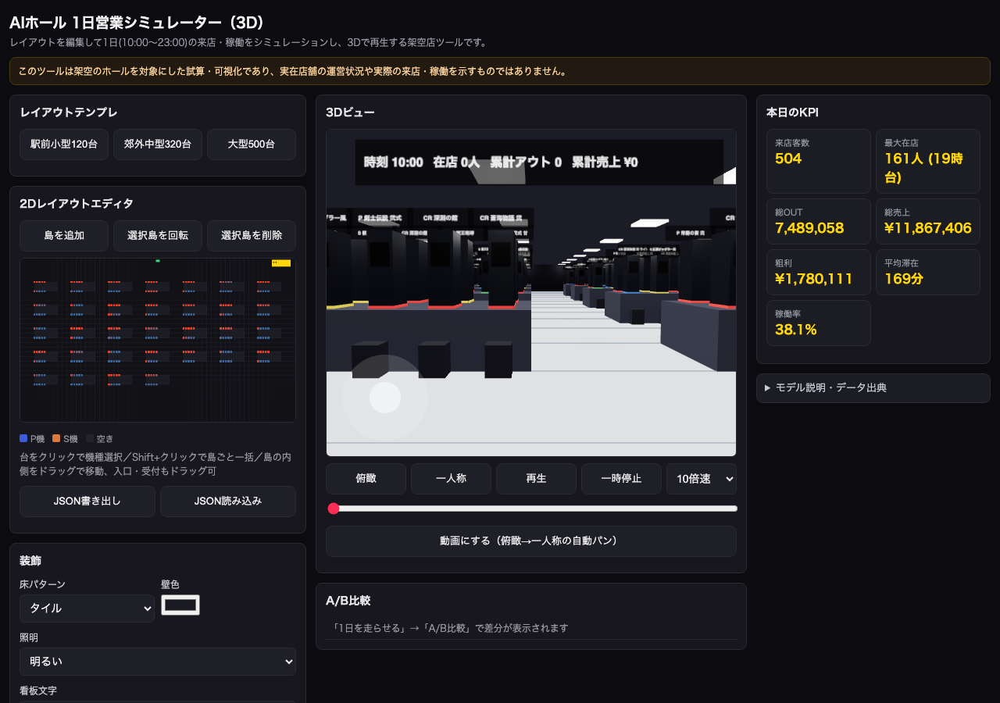
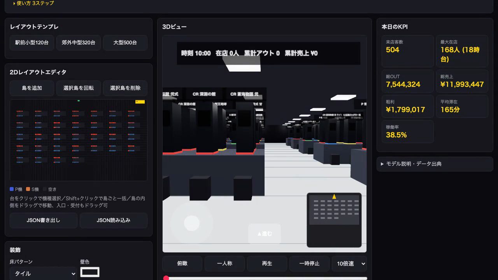

「パチンコ屋さんの仕事をAIで真似るシリーズ」の店舗側編として、無料ツールを4本公開しました。X（@ryoseichan3160）で投稿したものをまとめて、作った経緯と中身を書きます。
ツール一覧を見るこれまでこのシリーズでは、お店で行われている仕事をAIで再現できるかを試してきました。今回は「店舗の運営そのもの」に踏み込んでみようと思いました。立地を決めて、台を配置して、1日の営業をシミュレーションして、経営数値を見る。この一連の流れを、登録なしで誰でも触れる形にしてみたかったからです。
架空の店舗を舞台にしたデモなので、実在の店名や機種名、メーカー名は一切出していません。あくまで仕組みを体験してもらうためのものです。
①来店シミュレーター（raiten.html）
立地・商圏・曜日・イベントの条件を入れると、来客数と客層のペルソナが出てきます。数字の裏付けとして、レジャー白書2026速報、警察庁、日遊協系の統計など16件の出典をそのまま見られるようにしています。
②経営シミュレーター（keiei.html）
台数、稼働率、粗利率を動かすと、売上・利益・損益分岐点がどう変わるかを見られます。感度分析とモンテカルロシミュレーションも入れていて、条件が少し変わったときの振れ幅も確認できます。
③業界SNS「パチつな」
店舗・メーカー・ライター・従業員という立場のバッジを付けて話せるSNSです。求人、中古台、新台の情報や、店舗運営に関するタグを用意しました。広告規制に関わる言葉はサーバ側で自動的に弾く仕組みにしています。
④1日営業シミュレーター（3D・hall3d.html）
台の配置を決めると1日の営業をシミュレーションし、台ごとのアウト・稼働・売上をヒートマップで表示します。そのまま3Dの店内を一人称視点で歩けて、装飾がどう見えるかも事前に確認できます。動画として書き出すこともできます。


来店シミュレーターの統計は出典のある数字を使っていますが、経営シミュレーターや3Dシミュレーターの一部のパラメータ（稼働率と売上の連動具合など）は、公開情報だけでは決めきれない部分があり、仮の値を置いて調整しています。この仮置きが実態とどれだけ近いかは、正直まだ検証しきれていません。
一つだけ実測できたことがあります。3Dシミュレーターで、人気機種の島を入口に寄せる配置に変えたところ、同じ条件で店全体のアウトが約7%動きました。これはツール内のロジックに沿った結果で、実店舗でそのまま起きる保証はありませんが、配置ひとつで数字が動くこと自体は体感できたので、投稿しました。
店舗運営に関わる方はもちろん、これからパチンコ業界に興味を持つ方や、シミュレーションの仕組みそのものに関心がある方にも触ってもらえたらと思っています。登録は不要です。
触ってみて気づいたこと、数字の違和感、こうしてほしいという要望があれば、ぜひパチつなに投稿してください。一人で作っているものなので、実際に業界にいる方からの声が一番の手がかりになります。よろしくお願いします。
パチつなを開く